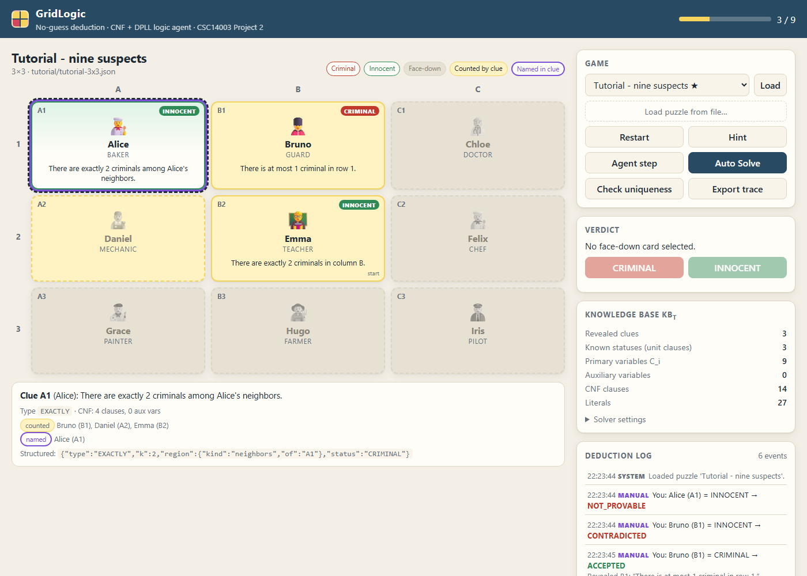
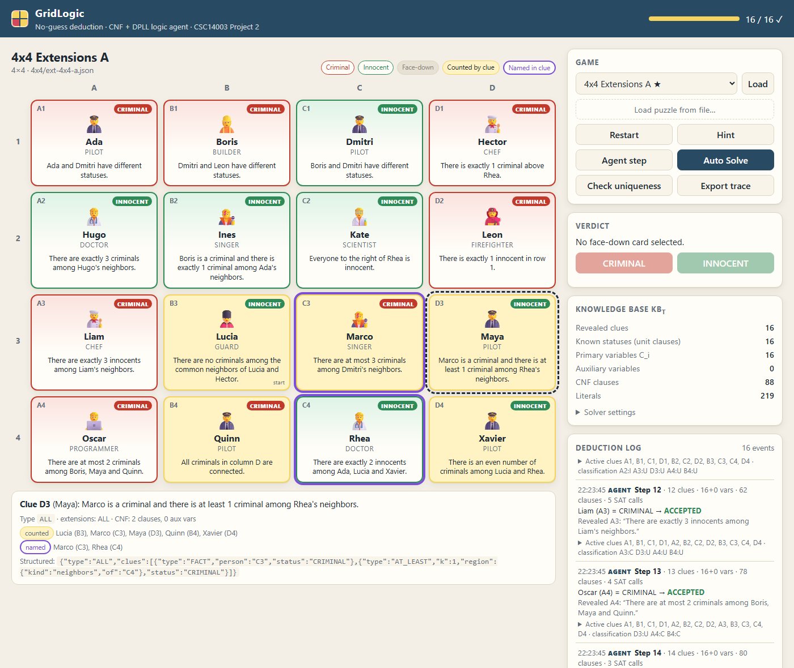
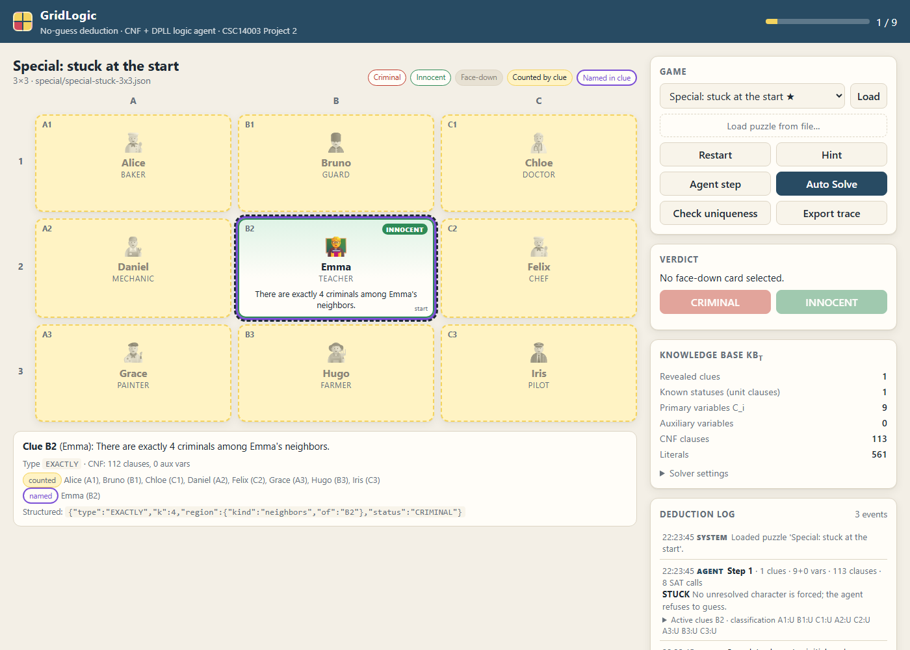

| STT | Họ và tên | MSSV | Vai trò |
|---|---|---|---|
| 1 | [Họ tên TV1] | [MSSV] | Game Engine, dữ liệu, tổng hợp báo cáo |
| 2 | [Họ tên TV2] | [MSSV] | Biến, vùng, encoder CNF, mở rộng |
| 3 | [Họ tên TV3] | [MSSV] | DPLL, thực nghiệm |
| 4 | [Họ tên TV4] | [MSSV] | Logic Agent, Hint, kiểm tra duy nhất |
| 5 | [Họ tên TV5] | [MSSV] | Giao diện web, video demo |
Giảng viên hướng dẫn: [điền tên] · Video demo (Google Drive): [dán liên kết Drive – quyền “bất kỳ ai có liên kết”]
TP. Hồ Chí Minh, 23/11/2026
[...] là chỗ cần điền; xóa khung này sau khi hoàn tất.Điểm cá nhân = điểm nhóm × tỷ lệ hoàn thành (ví dụ của đề: 9,0 × 90% = 8,1). Tỷ lệ được nhóm thống nhất dựa trên phần việc đã bàn giao và nghiệm thu trong bảng 1.2.
| Thành viên | MSSV | Nhiệm vụ chính | Tỷ lệ hoàn thành |
|---|---|---|---|
| TV1 · [Họ tên] | [MSSV] | Game Engine, định dạng dữ liệu, bộ câu đố, điều phối tích hợp, tổng hợp báo cáo | […]% |
| TV2 · [Họ tên] | [MSSV] | Ánh xạ biến, phân giải vùng, encoder CNF, bộ đánh giá trực tiếp, hai mở rộng trở lên | […]% |
| TV3 · [Họ tên] | [MSSV] | Bộ giải DPLL, bộ đếm, công cụ chạy thực nghiệm, phân tích số liệu | […]% |
| TV4 · [Họ tên] | [MSSV] | Logic Agent, xử lý phán quyết, Hint, Auto Solve, nhật ký, kiểm tra tính duy nhất | […]% |
| TV5 · [Họ tên] | [MSSV] | Giao diện web, tích hợp nút điều khiển, video demo, hướng dẫn chạy | […]% |
| Mục của đề | Điểm | Phụ trách | Sản phẩm bàn giao (trong mã nguồn) |
|---|---|---|---|
| §4.1 Trò chơi có GUI | 10 | TV5, TV1, TV4 | webapp/ (server + giao diện), gridlogic/engine.py |
| §4.2 Biểu diễn logic và CNF | 10 | TV2 | board.py, regions.py, clues.py, logic.py, cnf.py, encoder.py |
| §4.3 DPLL | 10 | TV3 | gridlogic/dpll.py |
| §4.4 Logic Agent | 20 | TV4 | knowledge.py, agent.py, uniqueness.py |
| §4.5 Thực nghiệm | 10 | TV3, TV1 | experiments.py, generator.py, tools/build_puzzles.py, results/ |
| §4.6 Báo cáo | 30 | Cả nhóm, TV1 tổng hợp | Report/ (mẫu HTML + script dựng PDF) |
| §4.7 Video | 10 | TV5, TV1, TV4 | Kịch bản ở Phụ lục D |
| Mốc | Nội dung | Điều kiện bàn giao |
|---|---|---|
| Tuần 1 | Chốt định dạng câu đố JSON, danh sách mẫu manh mối và mở rộng, giao diện giữa encoder – DPLL – agent – engine. | Một phán quyết hợp lệ chạy xuyên suốt từ logic tới bàn chơi. |
| Tuần 2 | Hoàn tất 6 mẫu cơ bản + mở rộng, DPLL, Logic Agent, kiểm tra duy nhất, bốn điều khiển web, bộ câu đố. | Chơi tay, Hint, Auto Solve, Restart dùng được; có ca giải được, ca kẹt, ca mâu thuẫn. |
| Tuần 3 | Đo thực nghiệm, viết báo cáo, quay video, đóng gói. | Bản nén chạy được ở thư mục mới; báo cáo đủ mục; video xem được ở chế độ ẩn danh. |
Bàn chơi là lưới N×N (thường 3 ≤ N ≤ 5; chương trình hỗ trợ 2..8 hàng/cột). Hàng đánh số từ trên xuống, cột đánh
chữ từ trái sang (ô C2 là cột C, hàng 2); nhân vật được xếp theo thứ tự chữ cái của tên theo thứ tự hàng-rồi-cột.
Mỗi nhân vật có trạng thái ẩn Criminal hoặc Innocent và một manh mối có cấu trúc. Một vài thẻ mở sẵn; mọi manh
mối đã mở đều đúng bất kể chủ thẻ là ai. Người chơi chỉ được lật một thẻ khi trạng thái của nó suy ra được từ
thông tin công khai hiện tại; lật đúng thì thẻ mở ra và lộ manh mối mới.
Hệ thống tách bạch hai vai trò theo yêu cầu của đề: Game Engine sở hữu toàn bộ câu đố (đáp án ẩn, manh mối của
thẻ úp) và Logic Agent chỉ nhận PublicState – gồm bố cục bàn, các thẻ đã mở, trạng thái và manh mối của
chúng. Kiểu PublicState không có trường nào chứa thông tin ẩn, nên agent không thể đọc đáp án dù vô tình.
Luồng một phán quyết: (1) người chơi/agent gửi (ô, CRIMINAL|INNOCENT); (2) Engine dựng
KBt từ trạng thái công khai và hỏi DPLL; (3) nếu trạng thái đối lập dẫn tới UNSAT và trùng đáp án
ẩn thì chấp nhận, lật thẻ, thêm trạng thái + manh mối vào tri thức công khai; ngược lại trả NOT_PROVABLE hoặc
CONTRADICTED và giữ nguyên bàn chơi.
| Tệp / thư mục | Vai trò |
|---|---|
main.py | Điểm vào: GUI (mặc định) và các lệnh solve, check, encode, generate, experiments. |
gridlogic/board.py | Tọa độ ô, Status, nhân vật, láng giềng (8 hướng). |
gridlogic/regions.py | Vùng: hàng, cột, láng giềng, danh sách ô + vùng mở rộng. |
gridlogic/clues.py | Manh mối: kiểm tra tham số, bộ đánh giá ngữ nghĩa trực tiếp, công thức logic, câu chữ, ô cần tô sáng. |
gridlogic/logic.py, cnf.py, encoder.py | Cây công thức, kho biến (chính/phụ), chuyển công thức → CNF. |
gridlogic/dpll.py | Bộ giải DPLL tự cài đặt. |
gridlogic/knowledge.py | Dựng KBt, truy vấn hệ quả, giải thích cho Hint. |
gridlogic/state.py, engine.py, agent.py | Trạng thái công khai, Game Engine, Logic Agent (vòng lặp suy luận, nhật ký, Hint). |
gridlogic/uniqueness.py | Kiểm tra tính duy nhất trên toàn bộ manh mối, kiểm định câu đố. |
gridlogic/generator.py, experiments.py | Sinh câu đố “không đoán”, chạy thực nghiệm. |
webapp/ | HTTP server (thư viện chuẩn) + giao diện HTML/CSS/JS. |
puzzles/, results/, tests/ | Bộ câu đố, kết quả thực nghiệm, 40 ca kiểm thử unittest. |
Toàn bộ thuật toán chính (vùng, mã hóa CNF, DPLL, agent, sinh câu đố) tự cài đặt bằng Python; chương trình chỉ dùng thư
viện chuẩn nên requirements.txt không có gói bắt buộc.

| Yêu cầu §4.1 | Cách đáp ứng |
|---|---|
| Hiển thị lưới, tọa độ, tên, nghề, trạng thái, manh mối mở, thẻ úp | Nhãn cột A, B, … và hàng 1, 2, …; mỗi thẻ có mã ô, avatar theo nghề, tên, nghề; thẻ úp màu xám nét đứt; thẻ mở có huy hiệu CRIMINAL (đỏ) / INNOCENT (xanh) và câu manh mối. |
| Gọi CRIMINAL / INNOCENT | Chọn thẻ úp → nút CRIMINAL/INNOCENT (hoặc phím C / I). |
| Chấp nhận khi chứng minh được và đúng | Thẻ lật (hiệu ứng xoay), hiện trạng thái và manh mối mới; manh mối mới được tô sáng ngay. |
| Từ chối, phân biệt hai lý do | Hộp thông báo NOT_PROVABLE hoặc CONTRADICTED (kèm số lần gọi SAT), thẻ rung, bàn chơi giữ nguyên, manh mối ẩn không bị lộ. |
| Chọn manh mối và tô sáng | Bấm thẻ đã mở: ô được đếm (vàng), người được nêu tên (viền tím), chủ manh mối (viền đứt); bảng dưới lưới hiện cấu trúc JSON và số mệnh đề CNF của manh mối. Dùng chung bộ phân giải vùng với encoder. |
| Load, Restart, Hint, Auto Solve | Chọn câu đố có sẵn hoặc tải tệp JSON; Restart về bộ thẻ mở ban đầu; Hint chỉ ra manh mối liên quan và nhân vật chứng minh được (bấm lần hai mới lộ phán quyết); Auto Solve chạy agent từng bước có hoạt ảnh, có thể dừng. Thêm: Agent step, Check uniqueness, Export trace, chọn cách mã hóa/heuristic. |

ext-4x4-a; đang chọn manh mối kép (ALL) của Maya.
special-stuck-3x3: agent dừng ở STUCK dù toàn bộ manh mối có nghiệm duy nhất.Mỗi nhân vật i ứng với đúng một biến chính Ci: Ci = True nếu i là
Criminal, False nếu Innocent. Ánh xạ là tất định: ô thứ k theo thứ tự hàng-rồi-cột nhận mã biến k
(A1 → 1, B1 → 2, …), độc lập với việc manh mối nào đang mở. Biến phụ do các phép mã hóa sinh ra được cấp mã từ
N² + 1 trở đi và được thống kê riêng (VarPool.num_primary / num_aux).
| A | B | C | |
|---|---|---|---|
| 1 | CA1 = 1 | CB1 = 2 | CC1 = 3 |
| 2 | CA2 = 4 | CB2 = 5 | CC2 = 6 |
| 3 | CA3 = 7 | CB3 = 8 | CC3 = 9 |
Vùng cơ bản: hàng {"kind":"row","row":2}, cột {"kind":"col","col":"B"},
láng giềng {"kind":"neighbors","of":"B2"} (8 hướng, bỏ chính ô đó, bỏ ô ngoài bàn – ô giữa/cạnh/góc trên 3×3
có 8/5/3 láng giềng) và danh sách ô {"kind":"cells","cells":[...]} (các ô phân biệt). Vùng mở rộng (biểu
thức vùng nâng cao): common_neighbors (giao các tập láng giềng), intersection, union,
edge (viền), corners (4 góc), all, direction (các ô bên trái/phải/trên/dưới
một người) và between (các ô nằm giữa hai người cùng hàng/cột). Mọi vùng được phân giải thành bộ ô phân biệt theo
thứ tự hàng-rồi-cột; vùng rỗng, ô ngoài bàn, danh sách trùng ô, between không thẳng hàng… đều bị từ chối.
Ký hiệu ℓi = Ci nếu manh mối đếm Criminal và ℓi = ¬Ci nếu đếm
Innocent (trường tùy chọn status, mặc định CRIMINAL; “đúng k người vô tội” tương đương “đúng |R| − k
người phạm tội”). Với manh mối đếm, đề yêu cầu k nguyên và 0 ≤ k ≤ |R|; chương trình kiểm tra điều này (kể cả
từ chối true/1.5). NO được hiểu là EXACTLY(0, R).
| Mẫu | Ví dụ câu chữ | Nội dung logic |
|---|---|---|
FACT(i, s) | Iris is innocent. | ¬Ci (hoặc Ci) |
SAME(i, j) | Iris and Daniel have the same status. | Ci ↔ Cj |
DIFFERENT(i, j) | Ada and Dmitri have different statuses. | Ci ⊕ Cj |
EXACTLY(k, R) | There are exactly 2 criminals in column B. | Σi∈R ℓi = k |
AT_LEAST(k, R) | There are at least 2 criminals among Chloe's neighbors. | Σ ℓi ≥ k |
AT_MOST(k, R) | There is at most 1 criminal in row 1. | Σ ℓi ≤ k |
| Mở rộng (đề yêu cầu ít nhất hai; nhóm cài đặt năm nhóm) | ||
PARITY(EVEN|ODD, R) | There is an odd number of criminals in column A. | ⊕i∈R ℓi = 1 (ODD) / 0 (EVEN) |
COMPARE(MORE|FEWER|EQUAL, R1, R2) | There are more criminals in column B than in column C. | ΣR1 ℓ > / < / = ΣR2 ℓ |
CONNECTED(R) (R là đoạn thẳng) | All criminals in row 3 are connected. | ¬(ℓi ∧ ¬ℓj ∧ ℓk) với mọi i < j < k |
Manh mối kép ALL / ANY / NOT / IMPLIES | If Iris is a criminal, then there is at least 1 criminal among Grace's neighbors. | φ ∧ ψ, φ ∨ ψ, ¬φ, φ → ψ |
| Vùng nâng cao (mục 3.2) | There are no criminals among the common neighbors of Lucia and Hector. | dùng làm R cho mọi mẫu đếm |
Bộ đánh giá ngữ nghĩa trực tiếp. Mỗi lớp manh mối có evaluate(board, assignment) tính trực tiếp trên một
phép gán đầy đủ (đếm số người theo trạng thái trong vùng rồi so với k, so sánh hai số đếm, kiểm tra tính liên tục…),
không gọi encoder. Bộ đánh giá được dùng để (i) kiểm tra dữ liệu câu đố (mọi manh mối phải đúng với đáp án ẩn),
(ii) sinh câu đố và (iii) kiểm thử chéo encoder: với mọi manh mối, mọi cách mã hóa và mọi phép gán các ô liên quan,
CNF ∧ phép gán là SAT khi và chỉ khi evaluate trả True (mục 7).
Trạng thái đã biết gồm thẻ mở sẵn và các phán quyết đã được chấp nhận, mỗi cái là một mệnh đề đơn. Trạng thái ẩn và manh
mối của thẻ úp không bao giờ có trong KBt: KnowledgeBase.from_public chỉ nhận
PublicState. CNF được dựng lại tự động ở mỗi bước từ dữ liệu có cấu trúc – không có CNF viết tay cho câu đố nào.
| Kết quả truy vấn trên nhân vật i | Phân loại | Phản hồi khi người chơi chọn |
|---|---|---|
| KBt UNSAT | INCONSISTENT | INCONSISTENT – dữ kiện công khai mâu thuẫn |
| KBt ∧ ¬Ci UNSAT | CRIMINAL | chọn CRIMINAL → ACCEPTED; chọn INNOCENT → CONTRADICTED |
| KBt ∧ Ci UNSAT | INNOCENT | chọn INNOCENT → ACCEPTED; chọn CRIMINAL → CONTRADICTED |
| cả hai SAT | UNKNOWN | NOT_PROVABLE (kể cả khi đoán trùng đáp án ẩn) |
Thêm hai mã phụ: ALREADY_REVEALED (thẻ đã mở) và PUZZLE_ERROR (trạng thái chứng minh được khác đáp án
ẩn – chỉ xảy ra khi dữ liệu câu đố sai). Phán quyết bị từ chối không làm thay đổi trạng thái trò chơi.
Mỗi manh mối được dịch qua hai tầng: clue.formula() trả về cây công thức (Atom, And,
Or, Not, Iff, Xor, Card, CountCompare) đúng như cột
“nội dung logic” ở trên; sau đó FormulaEncoder chuyển cây sang CNF. Bộ mã hóa có hai chế độ:
SAME(Iris, Daniel) – manh mối của Hugo trong câu đố hướng dẫn (Iris = C3, Daniel = A2):
Bước 1 tách tương đương thành hai phép kéo theo; bước 2 dùng p → q ≡ ¬p ∨ q. Kết quả: 2 mệnh đề, không biến phụ. Tương tự DIFFERENT(i, j): Ci ⊕ Cj ≡ (Ci ∨ Cj) ∧ (¬Ci ∨ ¬Cj) (“ít nhất một người phạm tội” và “không phải cả hai”). Đầu ra thật của chương trình:
Clue B3 [SAME, direct/direct]: Iris and Daniel have the same status.
-> 2 mệnh đề, 0 biến phụ
(¬C_C3 ∨ C_A2)
(C_C3 ∨ ¬C_A2)
Clue A1 [DIFFERENT, direct/direct]: Alice and Bruno have different statuses.
-> 2 mệnh đề, 0 biến phụ
(C_A1 ∨ C_B1)
(¬C_A1 ∨ ¬C_B1)
Với vùng R có n literal ℓ1..n, mã hóa tổ hợp trực tiếp (không biến phụ) dựa trên hai nhận xét:
Ví dụ 1 – “exactly one of A1, B1, C1 is a criminal” (EXACTLY 1 trên hàng 1 của lưới 3×3): ít nhất 1 cho C(3,3) = 1
mệnh đề (CA1 ∨ CB1 ∨ CC1); nhiều nhất 1 cho C(3,2) = 3 mệnh đề cấm từng cặp:
(¬CA1 ∨ ¬CB1), (¬CA1 ∨ ¬CC1), (¬CB1 ∨ ¬CC1). Tổng 4 mệnh đề – được
kiểm chứng tự động trong tests/test_encoding.py.
Ví dụ 2 – manh mối của Alice “There are exactly 2 criminals among Alice's neighbors”. Láng giềng của A1 trên 3×3 là {B1, A2, B2} (n = 3, k = 2). Ít nhất 2 ⇒ mọi tập 3−2+1 = 2 ô có một người phạm tội (3 mệnh đề); nhiều nhất 2 ⇒ tập 3 ô duy nhất có ít nhất một người vô tội (1 mệnh đề):
Clue A1 [EXACTLY, direct/direct]: There are exactly 2 criminals among Alice's neighbors.
-> 4 mệnh đề, 0 biến phụ
(C_B1 ∨ C_A2)
(C_B1 ∨ C_B2)
(C_A2 ∨ C_B2)
(¬C_B1 ∨ ¬C_A2 ∨ ¬C_B2)
Khi KB có thêm “Bruno (B1) là Criminal” và “Emma (B2) là Innocent”, lan truyền đơn vị trên (CA2 ∨ CB2) cho ngay CA2 = True – đúng là lý do Daniel (A2) bị chứng minh phạm tội ở bước 3 của nhật ký (mục 5.6).
Mã hóa tổ hợp tăng theo C(n, k) nên không phù hợp với vùng lớn (ví dụ viền của lưới 5×5 có 16 ô, C(16,8) = 12 870 mệnh đề). Chương trình cài thêm:
auto (mặc định): dùng mã hóa tổ hợp nếu cần ≤ 128 mệnh đề, ngược lại dùng bộ đếm tuần tự.Cùng manh mối của Alice với bộ đếm tuần tự (thêm biến phụ seq#…):
Clue A1 [EXACTLY, seqcounter/chain]: There are exactly 2 criminals among Alice's neighbors.
-> 13 mệnh đề, 6 biến phụ
(C_B1 ∨ seq#10)
(C_A2 ∨ seq#11)
(¬seq#10 ∨ seq#11)
(C_A2 ∨ ¬seq#10)
(C_B2 ∨ ¬seq#11)
(¬C_B1 ∨ seq#12)
(¬seq#13)
(¬C_A2 ∨ seq#14)
(¬seq#12 ∨ seq#14)
(¬C_A2 ∨ ¬seq#12 ∨ seq#15)
(¬seq#13 ∨ seq#15)
(¬C_A2 ∨ ¬seq#13)
(¬C_B2 ∨ ¬seq#15)
Clue A2 [PARITY, direct/direct]: There is an odd number of criminals in column A.
-> 4 mệnh đề, 0 biến phụ
(C_A1 ∨ C_A2 ∨ C_A3)
(C_A1 ∨ ¬C_A2 ∨ ¬C_A3)
(¬C_A1 ∨ C_A2 ∨ ¬C_A3)
(¬C_A1 ∨ ¬C_A2 ∨ C_A3)
Clue A2 [PARITY, auto/chain]: There is an odd number of criminals in column A.
-> 9 mệnh đề, 2 biến phụ
(¬xor#10 ∨ C_A1 ∨ C_A2)
(¬xor#10 ∨ ¬C_A1 ∨ ¬C_A2)
(xor#10 ∨ ¬C_A1 ∨ C_A2)
(xor#10 ∨ C_A1 ∨ ¬C_A2)
(¬xor#11 ∨ xor#10 ∨ C_A3)
(¬xor#11 ∨ ¬xor#10 ∨ ¬C_A3)
(xor#11 ∨ ¬xor#10 ∨ C_A3)
(xor#11 ∨ xor#10 ∨ ¬C_A3)
(xor#11)
Clue C3 [CONNECTED, direct/direct]: All criminals in row 3 are connected.
-> 1 mệnh đề, 0 biến phụ
(¬C_A3 ∨ C_B3 ∨ ¬C_C3)
Clue C2 [COMPARE, auto/auto]: There are more criminals in column B than in column C.
-> 36 mệnh đề, 10 biến phụ
(C_B2 ∨ C_B3 ∨ ¬tot#10)
(¬C_B3 ∨ tot#10)
(C_B2 ∨ ¬tot#11)
(¬C_B2 ∨ tot#10)
(C_B3 ∨ ¬tot#11)
(¬C_B2 ∨ ¬C_B3 ∨ tot#11)
(C_B1 ∨ tot#10 ∨ ¬tot#12)
(¬tot#10 ∨ tot#12)
… (28 mệnh đề nữa)
Clue A3 [IMPLIES, auto/auto]: If Iris is a criminal, then there is at least 1 criminal among Grace's neighbors.
-> 17 mệnh đề, 5 biến phụ
(C_B2 ∨ C_B3 ∨ ¬tot#10)
(¬C_B3 ∨ tot#10)
(C_B2 ∨ ¬tot#11)
(¬C_B2 ∨ tot#10)
(C_B3 ∨ ¬tot#11)
(¬C_B2 ∨ ¬C_B3 ∨ tot#11)
(C_A2 ∨ tot#10 ∨ ¬tot#12)
(¬tot#10 ∨ tot#12)
(C_A2 ∨ tot#11 ∨ ¬tot#13)
(¬tot#11 ∨ tot#13)
(C_A2 ∨ ¬tot#14)
(¬C_A2 ∨ tot#12)
(tot#10 ∨ ¬tot#13)
(¬C_A2 ∨ ¬tot#10 ∨ tot#13)
(tot#11 ∨ ¬tot#14)
(¬C_A2 ∨ ¬tot#11 ∨ tot#14)
(¬C_C3 ∨ tot#12)
Bảng sau mã hóa toàn bộ manh mối của mỗi câu đố cùng các thẻ mở sẵn (cấu hình mặc định auto) – đây cũng là
CNF của phép kiểm tra tính duy nhất ở mục 5.5.
| Câu đố | Kích thước | Biến chính | Biến phụ | Mệnh đề | Mở rộng dùng |
|---|---|---|---|---|---|
| classic-3x3-a | 3x3 | 9 | 0 | 32 | — |
| classic-3x3-b | 3x3 | 9 | 0 | 39 | — |
| classic-3x3-c | 3x3 | 9 | 0 | 60 | — |
| ext-3x3-a | 3x3 | 9 | 28 | 143 | COMPARE, PARITY, region:corners |
| classic-4x4-a | 4x4 | 16 | 0 | 90 | — |
| classic-4x4-b | 4x4 | 16 | 0 | 326 | — |
| classic-4x4-c | 4x4 | 16 | 0 | 67 | — |
| ext-4x4-a | 4x4 | 16 | 0 | 73 | ALL, CONNECTED, PARITY, region:common_neighbors, region:direction |
| ext-4x4-b | 4x4 | 16 | 48 | 494 | COMPARE, PARITY, region:common_neighbors, region:direction |
| stress-5x5-a | 5x5 | 25 | 0 | 331 | — |
| stress-ext-5x5-a | 5x5 | 25 | 53 | 373 | COMPARE, NOT, region:common_neighbors, region:corners, region:direction |
| special-inconsistent-3x3 | 3x3 | 9 | 5 | 44 | CONNECTED, IMPLIES, PARITY |
| special-multi-3x3 | 3x3 | 9 | 13 | 62 | COMPARE, CONNECTED, IMPLIES, PARITY |
| special-stuck-3x3 | 3x3 | 9 | 13 | 178 | COMPARE, CONNECTED, IMPLIES, PARITY |
| tutorial-3x3 | 3x3 | 9 | 13 | 70 | COMPARE, CONNECTED, IMPLIES, PARITY |
DPLL(F, assumptions):
gán các mệnh đề đơn của F và các giả định; nếu mâu thuẫn → UNSAT
return SEARCH()
SEARCH():
if not UNIT_PROPAGATE(): return False # phát hiện xung đột
(tùy chọn) gán các literal thuần
x ← biến chưa gán đầu tiên theo thứ tự tất định # "first": mã nhỏ nhất (biến chính trước)
if không còn x: return True # mọi mệnh đề đã thỏa
decisions += 1
for v in (False, True): # phase mặc định: thử Innocent trước
mark ← |trail|; gán x = v
if SEARCH(): return True # đệ quy
hoàn tác trail về mark; backtracks += 1 # quay lui
return False
first (mã nhỏ nhất – biến chính trước biến phụ) hoặc occurrence
(xuất hiện nhiều nhất, hòa thì mã nhỏ). Biến không có trong mệnh đề nào được gán False khi trả mô hình, nên SAT luôn đi kèm
phép gán đầy đủ.solve(assumptions) nhận các literal tạm, nên một bộ giải dựng từ KBt trả lời
mọi truy vấn KBt ∧ ±Ci mà không phải dựng lại.Một mô hình chỉ là một khả năng; phán quyết chỉ hợp lệ khi đúng trong mọi mô hình. Vì vậy với mỗi nhân vật chưa biết,
agent hỏi KBt ∧ Ci và KBt ∧ ¬Ci rồi phân loại theo bảng ở mục 3.4.
Tối ưu tái dùng mô hình (witness): mọi mô hình tìm được (kể cả của phép kiểm tra KBt) được lưu lại; nếu
đã có mô hình trong đó Ci = v thì KBt ∧ (Ci = v) chắc chắn SAT nên bỏ qua lần gọi đó
(ghi SKIPPED trong nhật ký). Tối ưu này đúng đắn vì chỉ bỏ qua các truy vấn mà kết quả SAT đã được chứng kiến; nó
không bao giờ bỏ qua truy vấn UNSAT – loại truy vấn duy nhất tạo ra phán quyết. Kiểm thử
test_witness_pruning_never_changes_classification xác nhận hai chế độ cho cùng phân loại trên mọi câu đố.
RUN(engine):
loop:
S ← engine.public_state() # chỉ thông tin công khai
if mọi thẻ đã mở: return SOLVED
KB ← CNF(S.clues) ∧ units(S.known)
if KB UNSAT: return INCONSISTENT
với mỗi ô chưa biết (thứ tự hàng-rồi-cột): phân loại CRIMINAL / INNOCENT / UNKNOWN
F ← các ô bị ép
if F rỗng: return STUCK # không đoán
mode "step": nộp F[0]; mode "wave": nộp toàn bộ F
engine kiểm tra lại, lật thẻ, trả manh mối mới; ghi nhật ký bước
Mỗi bước ghi: số bước, mã các manh mối đang dùng, kích thước KBt, từng truy vấn SAT và kết quả (kèm bộ
đếm), phân loại, phán quyết, phản hồi của Engine, mã + nội dung manh mối vừa mở (xuất JSON bằng main.py solve --trace
hoặc nút Export trace). Tính đơn điệu: KBt+1 ⊇ KBt nên ô đã bị ép vẫn bị ép ở bước sau;
do đó mọi thứ tự lật các ô bị ép (step hay wave) đều đi tới cùng một trạng thái cuối – điều này cũng được kiểm tra bằng thực nghiệm
(mục 6). Trạng thái kết thúc: SOLVED, STUCK, INCONSISTENT, TIMEOUT (và ERROR nếu Engine từ chối – không xảy ra với dữ liệu hợp lệ).
Hint chạy phân loại trên trạng thái công khai (không đọc đáp án ẩn). Với tối đa 4 ô bị ép đầu tiên, agent tìm tập manh mối tối thiểu đủ để chứng minh (xóa dần từng manh mối, giữ lại nếu bỏ đi thì KB ∧ ¬phán quyết thành SAT; manh mối không nhắc tới ô đích được thử bỏ trước), rồi chọn ô có lời giải thích ngắn nhất. Giao diện tô sáng các manh mối đó và ô đích; bấm Hint lần hai mới hiện phán quyết.
Phép kiểm tra tách biệt khỏi ván đang chơi và dùng toàn bộ manh mối: tìm một mô hình M của CNF(tất cả manh mối) ∧ (các
thẻ mở sẵn); nếu UNSAT → NO_SOLUTION. Ngược lại thêm mệnh đề chặn ⋁i (Ci ≠ M(Ci))
chỉ trên biến chính rồi giải lại: UNSAT → UNIQUE, SAT → MULTIPLE. Vì biến phụ không bị chặn, hai
mô hình chỉ khác nhau ở biến phụ không bị tính là hai lời giải. Chương trình cũng báo kết quả khi chỉ dùng manh mối (không thẻ
mở sẵn) và kiểm tra riêng khả năng giải tuần tự. Ba thuộc tính này độc lập: special-stuck-3x3 có nghiệm duy nhất nhưng
không giải được nếu không đoán; câu đố hướng dẫn chỉ duy nhất khi tính cả thẻ mở sẵn.
Ba bước đầu của agent (chế độ step) trên câu đố hướng dẫn, trích nguyên văn từ RunResult:
| Bước | Manh mối đang dùng | KBt | Truy vấn SAT (SKIPPED = trả lời bằng mô hình đã có) | Ô bị ép | Phán quyết → Engine | Manh mối mới |
|---|---|---|---|---|---|---|
| 1 | B2 | 9+0 biến, 5 mệnh đề | KB → SAT · KB ∧ C_A1 → SAT · KB ∧ ¬C_A1 → SKIPPED · KB ∧ C_B1 → SKIPPED · KB ∧ ¬C_B1 → UNSAT · KB ∧ C_C1 → SAT · KB ∧ ¬C_C1 → SKIPPED · KB ∧ C_A2 → SAT · KB ∧ ¬C_A2 → SKIPPED · KB ∧ C_C2 → SAT · KB ∧ ¬C_C2 → SKIPPED · KB ∧ C_A3 → SAT · KB ∧ ¬C_A3 → SKIPPED · KB ∧ C_B3 → SKIPPED · KB ∧ ¬C_B3 → UNSAT · KB ∧ C_C3 → SAT · KB ∧ ¬C_C3 → SKIPPED | B1=C, B3=C | Bruno (B1) = CRIMINAL → ACCEPTED | B1: “There is at most 1 criminal in row 1.” |
| 2 | B1, B2 | 9+0 biến, 9 mệnh đề | KB → SAT · KB ∧ C_A1 → UNSAT · KB ∧ ¬C_A1 → SKIPPED · KB ∧ C_C1 → UNSAT · KB ∧ ¬C_C1 → SKIPPED · KB ∧ C_A2 → SAT · KB ∧ ¬C_A2 → SKIPPED · KB ∧ C_C2 → SAT · KB ∧ ¬C_C2 → SKIPPED · KB ∧ C_A3 → SAT · KB ∧ ¬C_A3 → SKIPPED · KB ∧ C_B3 → SKIPPED · KB ∧ ¬C_B3 → UNSAT · KB ∧ C_C3 → SAT · KB ∧ ¬C_C3 → SKIPPED | A1=I, C1=I, B3=C | Alice (A1) = INNOCENT → ACCEPTED | A1: “There are exactly 2 criminals among Alice's neighbors.” |
| 3 | A1, B1, B2 | 9+0 biến, 14 mệnh đề | KB → SAT · KB ∧ C_C1 → UNSAT · KB ∧ ¬C_C1 → SKIPPED · KB ∧ C_A2 → SKIPPED · KB ∧ ¬C_A2 → UNSAT · KB ∧ C_C2 → SAT · KB ∧ ¬C_C2 → SKIPPED · KB ∧ C_A3 → SAT · KB ∧ ¬C_A3 → SKIPPED · KB ∧ C_B3 → SKIPPED · KB ∧ ¬C_B3 → UNSAT · KB ∧ C_C3 → SAT · KB ∧ ¬C_C3 → SKIPPED | C1=I, A2=C, B3=C | Chloe (C1) = INNOCENT → ACCEPTED | C1: “There is exactly 1 criminal among Chloe's neighbors.” |
Bộ câu đố được sinh bằng chính bộ suy luận: chọn đáp án ẩn và thẻ mở đầu; mỗi thẻ mở nhận một manh mối ngẫu nhiên đúng với đáp án
và nhắc tới ít nhất một thẻ úp; tìm mọi ô bị ép và lật cả “đợt”; nếu không ô nào bị ép thì rút lại manh mối của các thẻ vừa mở cho
đến khi có tiến triển. Nhờ tính đơn điệu, câu đố sinh ra luôn giải được không cần đoán và có nghiệm duy nhất cùng các thẻ mở sẵn;
tools/build_puzzles.py kiểm định lại từng câu (manh mối đúng, duy nhất, giải tuần tự được).
| Câu đố | Kích thước | Thẻ mở sẵn | Mở rộng | Kỳ vọng | Đợt lật (wave) | Tính duy nhất |
|---|---|---|---|---|---|---|
| classic-3x3-a | 3x3 | A2 | — | SOLVED | 8 | UNIQUE |
| classic-3x3-b | 3x3 | C3 | — | SOLVED | 5 | UNIQUE |
| classic-3x3-c | 3x3 | B3 | — | SOLVED | 4 | UNIQUE |
| ext-3x3-a | 3x3 | A2 | COMPARE, PARITY, region:corners | SOLVED | 6 | UNIQUE |
| classic-4x4-a | 4x4 | D1 | — | SOLVED | 10 | UNIQUE |
| classic-4x4-b | 4x4 | A2 | — | SOLVED | 6 | UNIQUE |
| classic-4x4-c | 4x4 | A1 | — | SOLVED | 11 | UNIQUE |
| ext-4x4-a | 4x4 | B3 | ALL, CONNECTED, PARITY, region:common_neighbors, region:direction | SOLVED | 14 | UNIQUE |
| ext-4x4-b | 4x4 | D4 | COMPARE, PARITY, region:common_neighbors, region:direction | SOLVED | 6 | UNIQUE |
| stress-5x5-a | 5x5 | C1 | — | SOLVED | 13 | UNIQUE |
| stress-ext-5x5-a | 5x5 | C1 | COMPARE, NOT, region:common_neighbors, region:corners, region:direction | SOLVED | 10 | UNIQUE |
| special-inconsistent-3x3 | 3x3 | B2, C2 | CONNECTED, IMPLIES, PARITY | INCONSISTENT | 0 | NO_SOLUTION |
| special-multi-3x3 | 3x3 | B2 | COMPARE, CONNECTED, IMPLIES, PARITY | STUCK | 1 | MULTIPLE |
| special-stuck-3x3 | 3x3 | B2 | COMPARE, CONNECTED, IMPLIES, PARITY | STUCK | 0 | UNIQUE |
| tutorial-3x3 | 3x3 | B2 | COMPARE, CONNECTED, IMPLIES, PARITY | SOLVED | 4 | UNIQUE |
Cấu hình chuẩn: chế độ step, mã hóa auto, chọn biến first, tái dùng mô hình bật.
| Câu đố | N×N | Kết quả | Biến chính | Biến phụ | Mệnh đề | Gọi SAT | Quyết định | Lan truyền | Quay lui | Bước lật | Đợt | ms |
|---|---|---|---|---|---|---|---|---|---|---|---|---|
| classic-3x3-a | 3x3 | SOLVED | 9 | 0 | 40 | 44 | 0 | 193 | 0 | 8 | 8 | 2,13 |
| classic-3x3-b | 3x3 | SOLVED | 9 | 0 | 47 | 44 | 6 | 227 | 0 | 8 | 5 | 2,32 |
| classic-3x3-c | 3x3 | SOLVED | 9 | 0 | 68 | 43 | 5 | 239 | 0 | 8 | 4 | 2,78 |
| ext-3x3-a | 3x3 | SOLVED | 9 | 28 | 151 | 44 | 15 | 475 | 0 | 8 | 6 | 4,64 |
| classic-4x4-a | 4x4 | SOLVED | 16 | 0 | 105 | 129 | 35 | 1041 | 0 | 15 | 10 | 8,02 |
| classic-4x4-b | 4x4 | SOLVED | 16 | 0 | 341 | 122 | 107 | 1108 | 0 | 15 | 6 | 19,78 |
| classic-4x4-c | 4x4 | SOLVED | 16 | 0 | 82 | 131 | 192 | 1027 | 0 | 15 | 11 | 7,70 |
| ext-4x4-a | 4x4 | SOLVED | 16 | 0 | 88 | 135 | 0 | 925 | 0 | 15 | 14 | 7,59 |
| ext-4x4-b | 4x4 | SOLVED | 16 | 48 | 509 | 130 | 66 | 2063 | 0 | 15 | 6 | 26,66 |
| stress-5x5-a | 5x5 | SOLVED | 25 | 0 | 355 | 310 | 472 | 3409 | 21 | 24 | 13 | 27,45 |
| stress-ext-5x5-a | 5x5 | SOLVED | 25 | 53 | 397 | 298 | 765 | 8237 | 0 | 24 | 10 | 34,10 |
| special-inconsistent-3x3 | 3x3 | INCONSISTENT | 9 | 0 | 9 | 1 | 0 | 4 | 0 | 0 | 0 | 0,10 |
| special-multi-3x3 | 3x3 | STUCK | 9 | 0 | 10 | 24 | 0 | 68 | 0 | 2 | 2 | 0,60 |
| special-stuck-3x3 | 3x3 | STUCK | 9 | 0 | 113 | 8 | 29 | 36 | 0 | 0 | 0 | 0,85 |
| tutorial-3x3 | 3x3 | SOLVED | 9 | 13 | 78 | 44 | 2 | 302 | 0 | 8 | 4 | 3,06 |
| Câu đố | Biến phụ D / S / T | Mệnh đề D / S / T | Quyết định D / S / T | ms D / S / T |
|---|---|---|---|---|
| classic-3x3-a | 0 / 32 / 23 | 40 / 93 / 106 | 0 / 0 / 0 | 2,04 / 2,77 / 2,87 |
| classic-3x3-b | 0 / 44 / 38 | 47 / 112 / 161 | 6 / 26 / 6 | 2,24 / 3,83 / 4,41 |
| classic-3x3-c | 0 / 76 / 54 | 68 / 182 / 218 | 5 / 26 / 5 | 2,76 / 4,85 / 5,38 |
| ext-3x3-a | 24 / 65 / 56 | 150 / 207 / 232 | 15 / 45 / 15 | 4,66 / 6,50 / 7,08 |
| classic-4x4-a | 0 / 112 / 78 | 105 / 272 / 318 | 35 / 50 / 35 | 7,91 / 14,38 / 17,77 |
| classic-4x4-b | 0 / 270 / 141 | 341 / 600 / 603 | 107 / 128 / 107 | 19,10 / 32,58 / 28,33 |
| classic-4x4-c | 0 / 101 / 79 | 82 / 244 / 322 | 192 / 490 / 192 | 7,46 / 14,66 / 17,39 |
| ext-4x4-a | 0 / 106 / 80 | 88 / 260 / 327 | 0 / 3 / 0 | 7,23 / 12,26 / 13,91 |
| ext-4x4-b | 48 / 279 / 161 | 509 / 702 / 688 | 66 / 226 / 66 | 25,49 / 36,59 / 37,36 |
| stress-5x5-a | 0 / 354 / 203 | 355 / 797 / 848 | 472 / 1305 / 472 | 28,11 / 53,23 / 56,34 |
| stress-ext-5x5-a | 53 / 316 / 191 | 397 / 811 / 793 | 765 / 765 / 765 | 34,58 / 57,83 / 56,10 |
| special-inconsistent-3x3 | 0 / 6 / 5 | 9 / 18 / 23 | 0 / 0 / 0 | 0,10 / 0,13 / 0,15 |
| special-multi-3x3 | 0 / 10 / 5 | 10 / 26 / 24 | 0 / 28 / 0 | 0,63 / 0,96 / 0,87 |
| special-stuck-3x3 | 0 / 56 / 24 | 113 / 119 / 107 | 29 / 29 / 29 | 0,87 / 0,84 / 0,74 |
| tutorial-3x3 | 13 / 35 / 30 | 78 / 112 / 123 | 2 / 2 / 2 | 3,18 / 4,36 / 4,87 |
| Câu đố | SAT step+W | SAT step | SAT wave+W | SAT wave | Bước (step) | Đợt (wave) | ms (4 cấu hình) |
|---|---|---|---|---|---|---|---|
| classic-3x3-a | 44 | 80 | 44 | 80 | 8 | 8 | 2,13 / 2,22 / 2,11 / 2,24 |
| classic-3x3-b | 44 | 80 | 26 | 53 | 8 | 5 | 2,32 / 2,46 / 2,00 / 2,10 |
| classic-3x3-c | 43 | 80 | 25 | 46 | 8 | 4 | 2,78 / 3,04 / 2,04 / 2,06 |
| ext-3x3-a | 44 | 80 | 32 | 58 | 8 | 6 | 4,64 / 5,08 / 4,65 / 4,74 |
| classic-4x4-a | 129 | 255 | 88 | 172 | 15 | 10 | 8,02 / 9,08 / 6,76 / 7,37 |
| classic-4x4-b | 122 | 255 | 53 | 112 | 15 | 6 | 19,78 / 21,56 / 12,88 / 13,74 |
| classic-4x4-c | 131 | 255 | 86 | 165 | 15 | 11 | 7,70 / 8,93 / 6,44 / 7,49 |
| ext-4x4-a | 135 | 255 | 132 | 250 | 15 | 14 | 7,59 / 8,25 / 6,95 / 8,18 |
| ext-4x4-b | 130 | 255 | 52 | 102 | 15 | 6 | 26,66 / 29,02 / 14,32 / 15,59 |
| stress-5x5-a | 310 | 624 | 207 | 403 | 24 | 13 | 27,45 / 33,53 / 18,15 / 21,82 |
| stress-ext-5x5-a | 298 | 624 | 125 | 268 | 24 | 10 | 34,10 / 47,66 / 23,37 / 28,54 |
| special-inconsistent-3x3 | 1 | 1 | 1 | 1 | 0 | 0 | 0,10 / 0,10 / 0,10 / 0,10 |
| special-multi-3x3 | 24 | 45 | 16 | 30 | 2 | 1 | 0,60 / 0,74 / 0,47 / 0,53 |
| special-stuck-3x3 | 8 | 17 | 8 | 17 | 0 | 0 | 0,85 / 1,02 / 0,84 / 0,99 |
| tutorial-3x3 | 44 | 80 | 22 | 42 | 8 | 4 | 3,06 / 3,61 / 1,96 / 2,13 |
| Câu đố | first (dec/bt) | occurrence (dec/bt) | pure-literal (dec/bt) | seq, no W (dec/bt) | tot+occ, no W (dec/bt) | ms first/occ/pure |
|---|---|---|---|---|---|---|
| classic-3x3-a | 0 / 0 | 0 / 0 | 0 / 0 | 0 / 0 | 0 / 0 | 2,13 / 2,01 / 2,27 |
| classic-3x3-b | 6 / 0 | 6 / 0 | 6 / 0 | 47 / 0 | 15 / 0 | 2,32 / 2,24 / 2,49 |
| classic-3x3-c | 5 / 0 | 5 / 0 | 2 / 0 | 65 / 0 | 21 / 0 | 2,78 / 2,74 / 3,11 |
| ext-3x3-a | 15 / 0 | 15 / 0 | 15 / 0 | 108 / 0 | 23 / 0 | 4,64 / 4,85 / 6,41 |
| classic-4x4-a | 35 / 0 | 53 / 0 | 35 / 0 | 109 / 0 | 79 / 0 | 8,02 / 7,97 / 10,15 |
| classic-4x4-b | 107 / 0 | 107 / 0 | 107 / 0 | 374 / 0 | 227 / 0 | 19,78 / 19,10 / 30,53 |
| classic-4x4-c | 192 / 0 | 192 / 0 | 46 / 0 | 1158 / 0 | 277 / 0 | 7,70 / 7,74 / 9,84 |
| ext-4x4-a | 0 / 0 | 0 / 0 | 0 / 0 | 6 / 0 | 0 / 0 | 7,59 / 7,37 / 8,34 |
| ext-4x4-b | 66 / 0 | 66 / 0 | 66 / 0 | 601 / 0 | 227 / 18 | 26,66 / 25,88 / 37,51 |
| stress-5x5-a | 472 / 21 | 478 / 0 | 79 / 21 | 3142 / 49 | 932 / 0 | 27,45 / 28,56 / 43,56 |
| stress-ext-5x5-a | 765 / 0 | 492 / 12 | 765 / 0 | 1861 / 0 | 1186 / 52 | 34,10 / 34,63 / 98,79 |
| special-inconsistent-3x3 | 0 / 0 | 0 / 0 | 0 / 0 | 0 / 0 | 0 / 0 | 0,10 / 0,10 / 0,10 |
| special-multi-3x3 | 0 / 0 | 0 / 0 | 0 / 0 | 54 / 0 | 0 / 0 | 0,60 / 0,63 / 0,70 |
| special-stuck-3x3 | 29 / 0 | 29 / 0 | 29 / 0 | 60 / 0 | 42 / 0 | 0,85 / 0,85 / 4,07 |
| tutorial-3x3 | 2 / 0 | 2 / 0 | 2 / 0 | 5 / 0 | 5 / 0 | 3,06 / 3,16 / 3,66 |
| Câu đố | Kết quả | Biến chính | Biến phụ | Mệnh đề | Gọi SAT | Quyết định | Lan truyền | Quay lui | ms |
|---|---|---|---|---|---|---|---|---|---|
| classic-3x3-a | UNIQUE | 9 | 0 | 32 | 2 | 0 | 18 | 0 | 0,20 |
| classic-3x3-b | UNIQUE | 9 | 0 | 39 | 2 | 0 | 18 | 0 | 0,21 |
| classic-3x3-c | UNIQUE | 9 | 0 | 60 | 2 | 0 | 18 | 0 | 0,27 |
| ext-3x3-a | UNIQUE | 9 | 28 | 143 | 2 | 0 | 70 | 0 | 0,58 |
| classic-4x4-a | UNIQUE | 16 | 0 | 90 | 2 | 0 | 32 | 0 | 0,43 |
| classic-4x4-b | UNIQUE | 16 | 0 | 326 | 2 | 0 | 32 | 0 | 1,22 |
| classic-4x4-c | UNIQUE | 16 | 0 | 67 | 2 | 0 | 32 | 0 | 0,34 |
| ext-4x4-a | UNIQUE | 16 | 0 | 73 | 2 | 0 | 32 | 0 | 0,41 |
| ext-4x4-b | UNIQUE | 16 | 48 | 494 | 2 | 0 | 124 | 0 | 1,87 |
| stress-5x5-a | UNIQUE | 25 | 0 | 331 | 2 | 2 | 56 | 3 | 1,54 |
| stress-ext-5x5-a | UNIQUE | 25 | 53 | 373 | 2 | 0 | 138 | 0 | 1,30 |
| special-inconsistent-3x3 | NO_SOLUTION | 9 | 5 | 44 | 1 | 0 | 5 | 0 | 0,19 |
| special-multi-3x3 | MULTIPLE | 9 | 13 | 62 | 2 | 9 | 35 | 0 | 0,34 |
| special-stuck-3x3 | UNIQUE | 9 | 13 | 178 | 2 | 0 | 40 | 0 | 0,78 |
| tutorial-3x3 | UNIQUE | 9 | 13 | 70 | 2 | 0 | 38 | 0 | 0,35 |
Ngoài bộ câu đố chuẩn, script sinh thêm câu đố 3×3 … 8×8 (hai seed cố định mỗi kích thước, 20% manh mối mở rộng) và chạy với cấu
hình chuẩn và cấu hình nặng nhất (seq-no-witness: bộ đếm tuần tự, luôn hỏi cả hai truy vấn). Dòng cuối chạy lại ca chậm
nhất với ngưỡng thời gian cố ý rất thấp để minh họa việc ghi nhận TIMEOUT thay vì loại bỏ.
| Cấu hình | Câu đố | Kết quả | Biến chính | Biến phụ | Mệnh đề | Gọi SAT | Quyết định | Quay lui | Lật | ms |
|---|---|---|---|---|---|---|---|---|---|---|
| baseline | scale-3x3-s11 | SOLVED | 9 | 0 | 49 | 40 | 7 | 0 | 8 | 2,89 |
| seq-no-witness | scale-3x3-s11 | SOLVED | 9 | 21 | 72 | 80 | 64 | 0 | 8 | 3,63 |
| baseline | scale-3x3-s12 | SOLVED | 9 | 16 | 86 | 44 | 0 | 0 | 8 | 4,32 |
| seq-no-witness | scale-3x3-s12 | SOLVED | 9 | 42 | 126 | 80 | 33 | 0 | 8 | 5,15 |
| baseline | scale-4x4-s11 | SOLVED | 16 | 17 | 158 | 123 | 127 | 44 | 15 | 8,57 |
| seq-no-witness | scale-4x4-s11 | SOLVED | 16 | 112 | 310 | 255 | 339 | 44 | 15 | 23,86 |
| baseline | scale-4x4-s12 | SOLVED | 16 | 24 | 214 | 132 | 81 | 0 | 15 | 9,22 |
| seq-no-witness | scale-4x4-s12 | SOLVED | 16 | 148 | 384 | 255 | 772 | 0 | 15 | 19,89 |
| baseline | scale-5x5-s11 | SOLVED | 25 | 11 | 178 | 292 | 786 | 120 | 24 | 24,16 |
| seq-no-witness | scale-5x5-s11 | SOLVED | 25 | 125 | 355 | 624 | 1867 | 126 | 24 | 45,17 |
| baseline | scale-5x5-s12 | SOLVED | 25 | 285 | 858 | 299 | 196 | 0 | 24 | 56,41 |
| seq-no-witness | scale-5x5-s12 | SOLVED | 25 | 474 | 1144 | 624 | 787 | 0 | 24 | 122 |
| baseline | scale-6x6-s11 | SOLVED | 36 | 131 | 1045 | 577 | 16252 | 28609 | 35 | 218 |
| seq-no-witness | scale-6x6-s11 | SOLVED | 36 | 524 | 1472 | 1295 | 33109 | 55811 | 35 | 603 |
| baseline | scale-6x6-s12 | SOLVED | 36 | 32 | 738 | 598 | 3678 | 2990 | 35 | 155 |
| seq-no-witness | scale-6x6-s12 | SOLVED | 36 | 498 | 1206 | 1295 | 10945 | 2991 | 35 | 427 |
| baseline | scale-7x7-s11 | SOLVED | 49 | 147 | 2135 | 1058 | 90429 | 166170 | 48 | 2 516 |
| seq-no-witness | scale-7x7-s11 | SOLVED | 49 | 1195 | 2939 | 2400 | 103789 | 166499 | 48 | 5 585 |
| baseline | scale-7x7-s12 | SOLVED | 49 | 146 | 2158 | 992 | 14071 | 14416 | 48 | 490 |
| seq-no-witness | scale-7x7-s12 | SOLVED | 49 | 1202 | 2942 | 2400 | 53890 | 14487 | 48 | 1 686 |
| baseline | scale-8x8-s11 | SOLVED | 64 | 45 | 2064 | 1842 | 21725 | 170 | 63 | 423 |
| seq-no-witness | scale-8x8-s11 | SOLVED | 64 | 1186 | 2735 | 4095 | 157548 | 512 | 63 | 1 758 |
| baseline | scale-8x8-s12 | SOLVED | 64 | 243 | 2774 | 1829 | 10688 | 28 | 63 | 552 |
| seq-no-witness | scale-8x8-s12 | SOLVED | 64 | 1475 | 3860 | 4095 | 55168 | 45 | 63 | 2 249 |
| seq-no-witness@1.40s | scale-7x7-s11 | TIMEOUT | 49 | 334 | 850 | 880 | 10888 | 11752 | 10 | 1 398 |
auto tự chuyển).first; loại literal thuần cho 1 123 quyết định nhưng tổng thời gian 257 ms so với 146 ms vì mỗi nút phải quét lại toàn bộ mệnh đề chưa thỏa. Với cấu hình nặng (bộ đếm tuần tự, không witness) khác biệt về quyết định rõ hơn (Bảng 6.5).special-multi-3x3 là MULTIPLE và special-inconsistent-3x3 là NO_SOLUTION.special-stuck-3x3: manh mối mở đầu “exactly 4 criminals among Emma's neighbors” không ép được ô
nào; agent dừng sau 8 lần gọi SAT dù toàn bộ manh mối có nghiệm duy nhất. special-multi-3x3: sau hai lần
lật, mọi ô còn lại đều UNKNOWN vì câu đố có nhiều nghiệm. Đây là hành vi đúng của tác tử “không đoán”.special-inconsistent-3x3: hai manh mối mở sẵn mâu thuẫn (một trong hai sai so với đáp án
ẩn); KB UNSAT ngay ở lần gọi đầu, agent dừng, GUI cảnh báo dữ liệu câu đố có manh mối sai.Chạy python -m unittest discover -s tests trong thư mục Source: 40 ca kiểm thử, tất cả đạt
(3.0 giây). Các nhóm chính:
| Tệp | Nội dung kiểm tra |
|---|---|
test_regions_clues.py | Láng giềng ô giữa/cạnh/góc = 8/5/3; mọi kiểu vùng; từ chối vùng/tham số sai; k = 0 và k = |R|; bộ đánh giá trực tiếp; câu chữ. |
test_encoding.py | CNF ⟺ bộ đánh giá trực tiếp trên mọi phép gán các ô liên quan, cho 64 manh mối (thủ công + ngẫu nhiên) × 4 cấu hình mã hóa, cả chế độ assert lẫn reify; hai dẫn xuất ở mục 4; ánh xạ biến tất định. |
test_dpll.py | So với vét cạn trên 250 công thức ngẫu nhiên × 4 cấu hình; ví dụ trong đề; mệnh đề rỗng; phép gán đầy đủ; bộ đếm (bài toán chuồng bồ câu); dùng lại bộ giải; deadline. |
test_agent_engine.py | Ví dụ §3.4 của đề; INCONSISTENT; agent chỉ cần PublicState; NOT_PROVABLE kể cả khi đoán đúng; CONTRADICTED/ACCEPTED/ALREADY_REVEALED; mọi câu đố ở cả hai chế độ; phát lại nhật ký để xác nhận mỗi phán quyết suy ra được từ các manh mối mở trước đó; Hint; kiểm tra 0/1/nhiều nghiệm. |
test_server.py | API web: dữ liệu trả về không chứa trạng thái/manh mối của thẻ úp; phiên độc lập giữa các tab; tải tệp; kiểm tra duy nhất. |
| Yêu cầu | Trạng thái | Minh chứng |
|---|---|---|
| §4.1 GUI, 4 điều khiển, NOT_PROVABLE / CONTRADICTED, tô sáng, tách Engine/Agent | Hoàn thành | Mục 2.4, Hình 1–3, test_server.py |
| §4.2 Ánh xạ tất định, kiểm tra tham số, CNF tự động, mệnh đề đơn, thống kê, bộ đánh giá trực tiếp | Hoàn thành | Mục 3–4, test_encoding.py |
| ≥ 2 mở rộng | 5 nhóm | PARITY, COMPARE, CONNECTED, manh mối kép, vùng nâng cao |
| §4.3 DPLL: lan truyền, xung đột, chọn biến tất định, đệ quy/quay lui, SAT + mô hình đầy đủ / UNSAT, bộ đếm + thời gian | Hoàn thành | Mục 5.1, test_dpll.py; thêm literal thuần (tùy chọn) |
| §4.4 Phân loại, không đoán, nhận manh mối từ Engine, nhật ký, kiểm tra duy nhất, Hint không đọc đáp án | Hoàn thành | Mục 5.2–5.6 |
| §4.5 Thực nghiệm 3×3, 4×4 (+5×5), đủ 6 nhóm số liệu, giữ ca lỗi | Hoàn thành | Mục 6, results/ |
| §4.7 Video | Nhóm thực hiện | Kịch bản ở Phụ lục D |
http.server, unittest, dataclasses.| Công cụ | Claude Code (mô hình Claude Opus 5.5 của Anthropic), chạy trong ứng dụng Claude trên Windows. |
|---|---|
| Prompt chính | @"AI - Project 2.pdf" Hãy làm toàn bộ project này cho tôi. Sau đó push lên https://github.com/Tuanpc309/CS-AI-PROJECT-2 |
| Phạm vi AI tạo ra | Thiết kế kiến trúc, toàn bộ mã nguồn Python/HTML/CSS/JS, bộ kiểm thử, bộ câu đố (qua bộ sinh), script thực nghiệm, bản nháp báo cáo này và các hình chụp giao diện. |
| Kiểm chứng | Mọi số liệu trong mục 6 do script experiments.py đo trên máy thật và được chèn tự động vào báo cáo bởi Report/build_report.py; 40 ca kiểm thử tự động; giao diện được thử trực tiếp trên trình duyệt. |
| Nhóm bổ sung | [Các prompt khác, phần nhóm tự viết/sửa, cách nhóm đọc hiểu và kiểm tra lại mã nguồn] |
Yêu cầu Python ≥ 3.10 (đã thử với Python 3.12.10), không cần thư viện ngoài. Trong thư mục Source:
python main.py # mở GUI tại http://127.0.0.1:8000
python main.py gui --port 8080 --no-browser # đổi cổng / không tự mở trình duyệt
python main.py solve puzzles/4x4/classic-4x4-a.json --verbose --trace trace.json
python main.py check puzzles/special/special-stuck-3x3.json
python main.py encode puzzles/tutorial/tutorial-3x3.json --all --dimacs kb.cnf
python main.py generate --size 4 --seed 7 --ext 0.3 --out my-puzzle.json
python main.py experiments # ghi results/experiments.{csv,json,md}
python -m unittest discover -s tests # chạy kiểm thử
python ../Report/build_report.py # dựng lại Report.pdf (cần Microsoft Edge hoặc Chrome)
{
"id": "tutorial-3x3", "title": "Tutorial - nine suspects",
"rows": 3, "cols": 3,
"initial": ["B2"], // thẻ mở sẵn
"characters": [
{"cell": "A1", "name": "Alice", "profession": "Baker", "status": "INNOCENT",
"clue": {"type": "EXACTLY", "k": 2, "region": {"kind": "neighbors", "of": "Alice"}}},
{"cell": "B3", "name": "Hugo", "profession": "Farmer", "status": "CRIMINAL",
"clue": {"type": "SAME", "a": "Iris", "b": "Daniel"}},
{"cell": "A3", "name": "Grace", "profession": "Painter", "status": "INNOCENT",
"clue": {"type": "IMPLIES", "if": {"type": "FACT", "person": "Iris", "status": "CRIMINAL"},
"then": {"type": "AT_LEAST", "k": 1, "region": {"kind": "neighbors", "of": "Grace"}}}},
...
]
}
Người trong manh mối có thể ghi bằng mã ô hoặc tên. Trường status của manh mối đếm (mặc định CRIMINAL) chọn trạng
thái được đếm. Tệp câu đố chứa đáp án nên chỉ Game Engine đọc; GUI có nút tải tệp để nạp câu đố mới.
python main.py; giới thiệu lưới, tọa độ, thẻ úp/mở, chú giải màu, bảng KB, nhật ký.special-stuck-3x3 (STUCK + Check uniqueness = UNIQUE nhưng không giải tuần tự được),
special-inconsistent-3x3 (INCONSISTENT). Đổi cách mã hóa trong Solver settings và xem số biến phụ/mệnh đề thay đổi.python main.py solve … --verbose, python main.py experiments; tổng kết.Tải video lên Google Drive, đặt quyền “Bất kỳ ai có liên kết đều xem được”, kiểm tra bằng cửa sổ ẩn danh, dán liên kết vào trang bìa.